Название приложения: OffLink
Целевая аудитория: Все, кто хочет совершать групповые голосовые вызовы в одной сети WiFi
Дата создания: 9 марта 2026 г.
Последнее обновление: 11 апреля 2026 г.
OffLink — это приложение, которое позволяет совершать групповые голосовые вызовы без подключения к Интернету в одной сети WiFi или при использовании раздачи интернета. Благодаря P2P-связи через WebRTC обеспечиваются голосовые вызовы с минимальной задержкой.
Примеры использования:
Главный экран после запуска приложения. Начните работу, используя три кнопки в нижней части экрана.
OffLink работает в режиме WiFi LAN. Все участники должны быть подключены к одной сети WiFi. Устройство-хост запускает сигнальный сервер, и голосовые вызовы осуществляются между устройствами в одной сети.
Ключевой момент: Подключение к Интернету не требуется.
| Роль | Совместимые устройства | Описание |
|---|---|---|
| Хост | Android / iPhone | Устройство, которое запускает сигнальный сервер и управляет вызовом |
| Гость | Android / iPhone | Устройство, которое присоединяется к вызову, созданному хостом |
Примечание: Все участники должны быть подключены к одной сети WiFi.
| Разрешение | Назначение | Последствия отказа |
|---|---|---|
| Микрофон | Голосовые вызовы | Невозможно совершать вызовы |
| Камера | Сканирование QR-кода | Невозможна регистрация группы через QR |
| Устройства поблизости (WiFi) ※Android | Обнаружение сети WiFi | Невозможно обнаружить хост |
| Местоположение ※Android | Сканирование WiFi (требование ОС) | Невозможно получить SSID WiFi |
| Bluetooth ※Android | Подключение гарнитуры | Невозможно использовать гарнитуру |
| Уведомления ※Android | Уведомления о приглашении на вызов | Нет фоновых уведомлений |
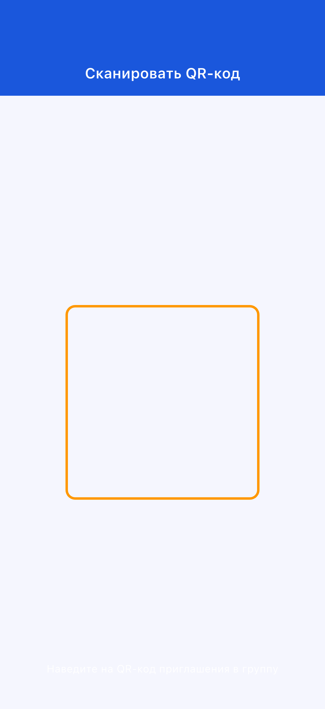
Если вы случайно отклонили разрешение: перейдите в «Настройки» → «Приложения» → «OffLink», чтобы изменить разрешения.
Начните вызов мгновенно, без предварительного создания группы.
Шаг 1: Все участники подключаются к одной сети WiFi
Шаг 2: Нажмите «Мгновенный вызов» (зелёная кнопка)
Шаг 3: Введите имя пользователя
Шаг 4: Выберите уровень и начните вызов (→ 3-5. Система баллов)
Шаг 5: Приглашение на вызов автоматически отправляется участникам в той же сети WiFi
Если хост уже существует, вы можете выбрать — присоединиться к его вызову или начать новый.
Шаг 1: Нажмите «Создать как хост» (синяя кнопка)
Шаг 2: Введите имя группы и пароль (необязательно), затем нажмите «Создать»

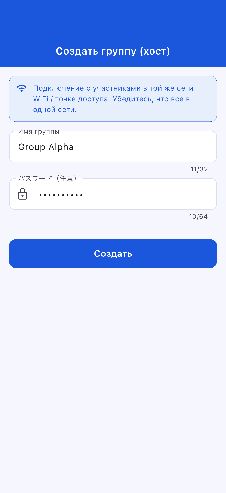
Совет: Выберите легко узнаваемое имя группы. Рекомендуется установить пароль.
Шаг 3: Выберите действие при создании
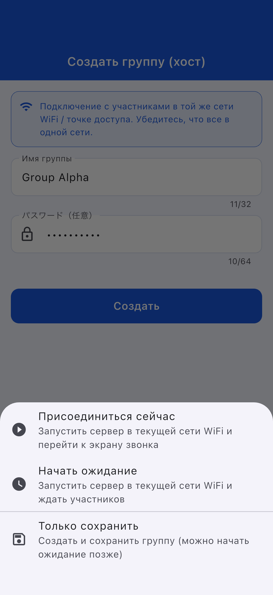
| Действие | Описание |
|---|---|
| Присоединиться сейчас | Запускает сервер и открывает экран вызова |
| Режим ожидания | Запускает сервер и ожидает |
| Только сохранить | Можно запустить позже |
Шаг 1: Нажмите «Присоединиться как гость» (голубая кнопка)
Шаг 2: Выберите способ присоединения
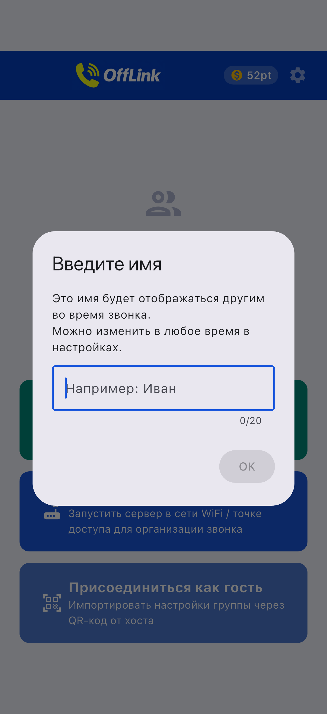
| Способ | Действие |
|---|---|
| 📱 Сканировать QR-код | Отсканируйте QR-код хоста |
| 📋 Вставить код | Вставьте общий код |
| ✏️ Ввод вручную | Введите информацию вручную |
Передача QR-кода (сторона хоста):

Вставка кода (сторона гостя):
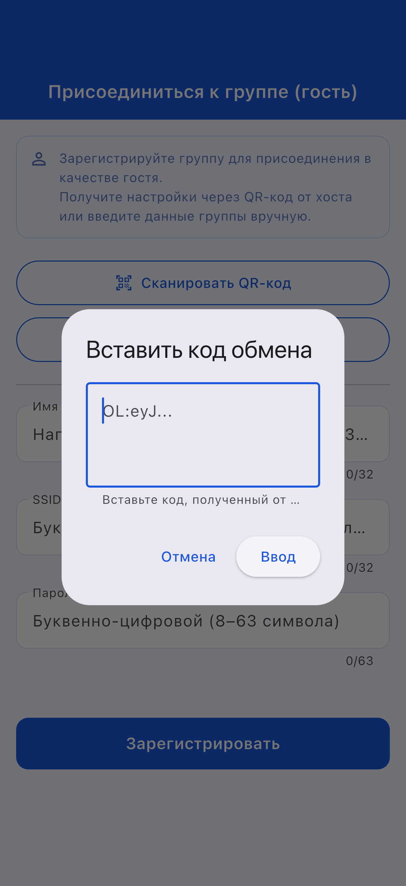
Шаг 3: После ввода информации нажмите «Зарегистрировать»
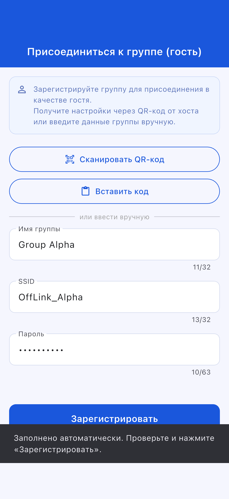
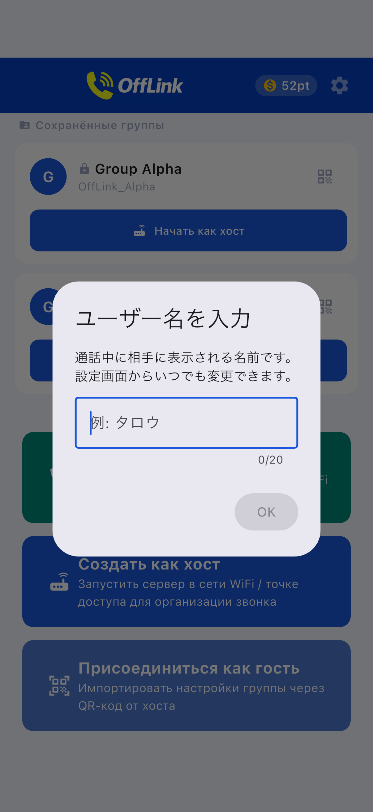
Экран присоединения гостя:
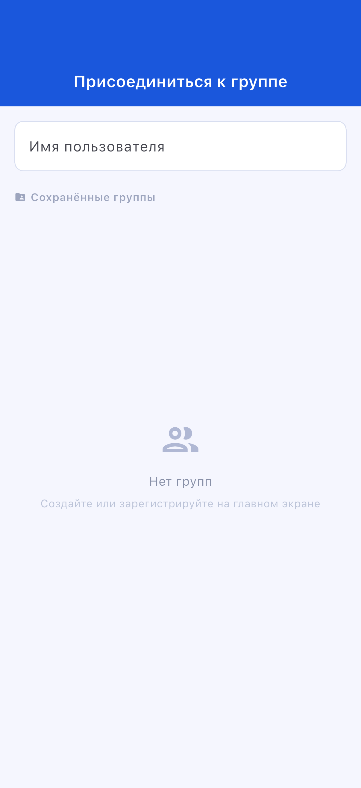
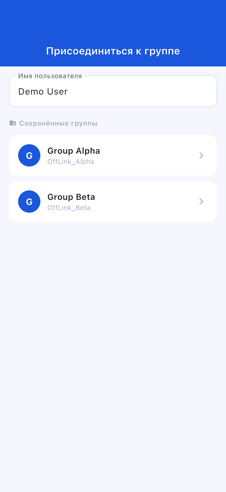
Экран ожидания:
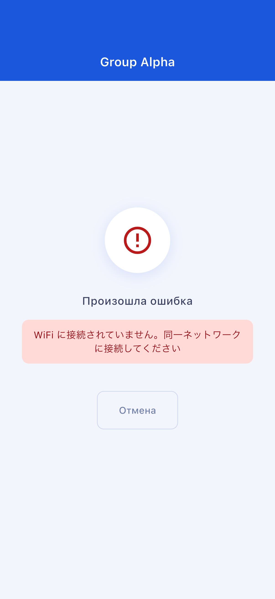
Экран вызова:
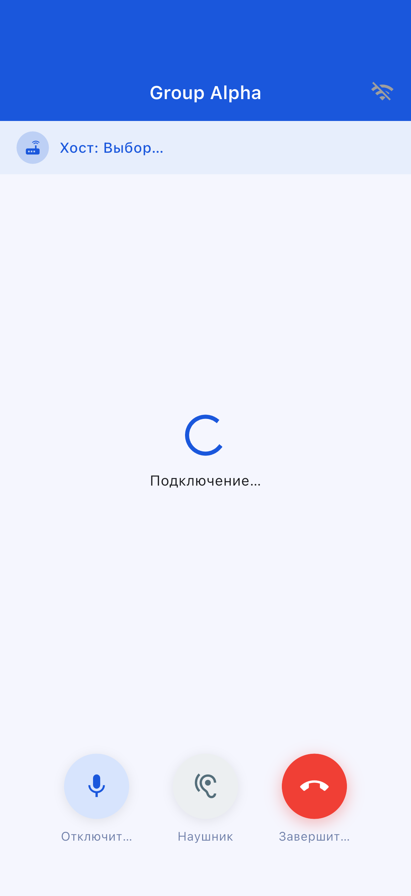
| Кнопка | Функция |
|---|---|
| 🎤 Отключить звук | Включить/выключить микрофон |
| 🔊 Переключить аудиовыход | Динамик / Bluetooth / Наушник |
| 🔴 Завершить вызов | Выйти из вызова |
| Уровень | Расход баллов | Максимум участников |
|---|---|---|
| Standard | 10 pt | 4 человека |
| Large | 20 pt | 10 человек |
OffLink не имеет функции автоматического запуска точки доступа. Включите раздачу интернета вручную.
Перейдите в «Настройки» → «Приложения» → «OffLink» → «Разрешения», чтобы изменить их
| Элемент | Ограничение |
|---|---|
| Максимальное число участников | Standard: 4 / Large: 10 |
| Режим связи | Только WiFi LAN |
| Фоновый режим | Ограничен в зависимости от модели устройства |
| Лимит сохранённых групп | Free: 5 / Premium: без ограничений |
| Элемент | Рекомендация |
|---|---|
| Android | 5.0+ (API 21+) |
| iOS | 13.0+ |
| Батарея | Рекомендуется 80 % и выше |
| Хранилище | 100 МБ и более |
| WiFi | Маршрутизатор / Раздача интернета / Портативный WiFi и т. д. |